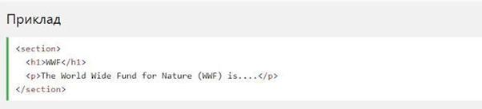
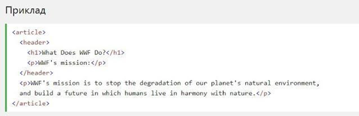
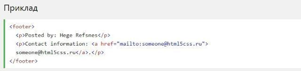

Підтримка браузерів
Семантичні елементи HTML5 підтримуються у всіх сучасних браузерах. Крім того, ви можете "навчити" старі браузери, як обробляти "невідомі елементи".
Прочитайте про це в підтримці браузера HTML5.
Семантичний елемент чітко описує його значення як для браузера, так і для розробника.
Приклади не семантичних елементів: div і span - нічого не говорять про його зміст.
Приклади семантичних елементів: form, table і article - чітко визначають його зміст.
Семантичні елементи HTML5 підтримуються у всіх сучасних браузерах. Крім того, ви можете "навчити" старі браузери, як обробляти "невідомі елементи".
Прочитайте про це в підтримці браузера HTML5.
HTML5 пропонує нові семантичні елементи для визначення різних частин веб-сторінки:
Елемент section визначає розділ в документі. Згідно з документацією W3C's HTML5: "section представляє собою тематичне угруповання контенту, зазвичай з заголовком". Домашня сторінка зазвичай може бути розділена на розділи для ознайомлення, змісту і контактної інформації.
Елемент article визначає незалежний, автономний вміст. Стаття повинна мати сенс самостійно, і вона повинна мати можливість читати його незалежно від іншої частини веб-сайту.
Приклади того, де можна використовувати елемент article:
Елемент header задає заголовок для документа або розділу. Елемент header повинен використовуватися в якості контейнера для вступного змісту. В одному документі може бути кілька елементів header.
У наступному прикладі визначається заголовок для статті:
Елемент footer вказує нижній колонтитул для документа або розділу. Нижній колонтитул зазвичай містить ім'я автора документа, інформацію про авторське право, посилання на умови використання, контактні дані і т.д.
В одному документі може бути кілька елементів footer.
Більше інформації про сучасні тренди у Front-end розробці у відео